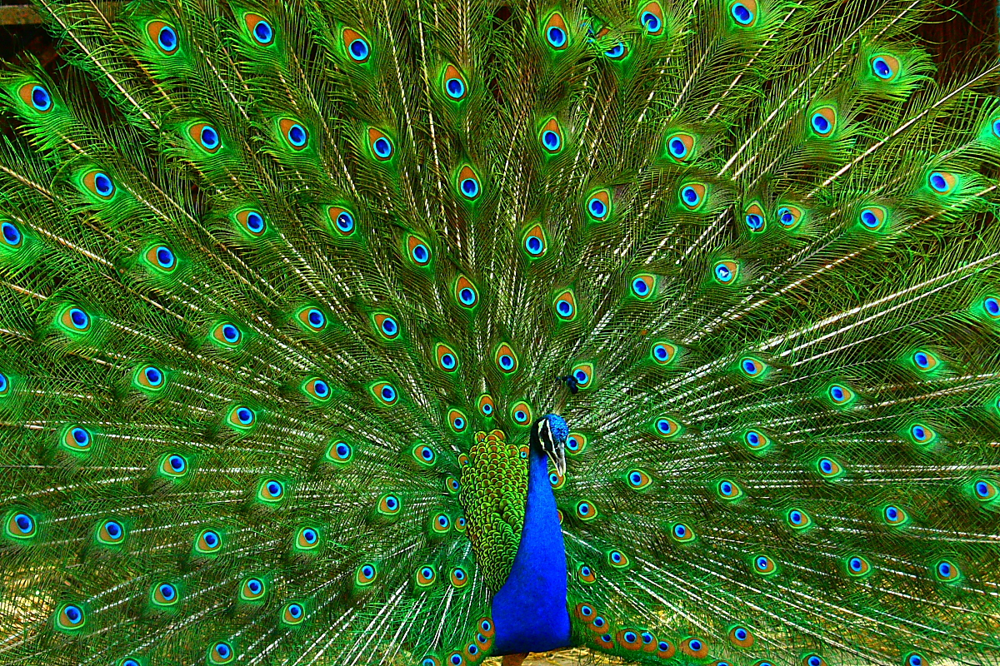

NATIONAL BIRD - PEACOCK
- The national bird of a country is a designated representative of that country’s fauna. It is chosen on the basis of the unique qualities that the bird may symbolize. It should uphold certain core qualities or values of the nation it belongs to. The national bird should be a prominent feature in the cultural history of the country. Another point in favor of being chosen as the national bird is the beauty that it embodies. The indigenous nature of the bird is another point while it is being considered as the national bird. Being designated as a national symbol affords the bird a special status with increased awareness and dedicated conservation efforts.
-
National bird of India is the Indian Peafowl commonly termed as a Peacock. Vividly colorful and exuding oodles of grace, the Indian Peafowl commands a lot of attention. The peacock and its colors are synonymous with Indian identity. It is indigenous to India and Sri Lanka, but now features in countries all over the world. Peacocks are sometimes domesticated and kept in the garden for aesthetic purposes.